Monitoring Konzepte mit Demo-Implementierung in modernen Software-Architekturen
Spring Boot • Prometheus • Grafana • Docker Compose
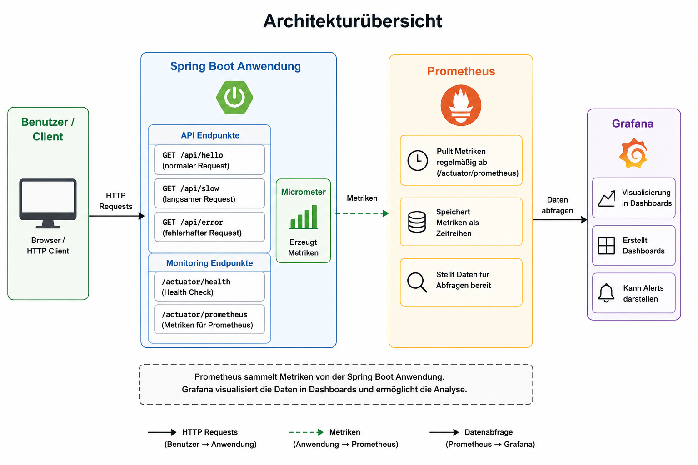
Einleitung
Moderne Software-Systeme bestehen häufig aus mehreren Services.
Monitoring hilft dabei, Fehler und Performance-Probleme frühzeitig zu erkennen.
Besonders wichtig bei Cloud- und Microservice-Architekturen.
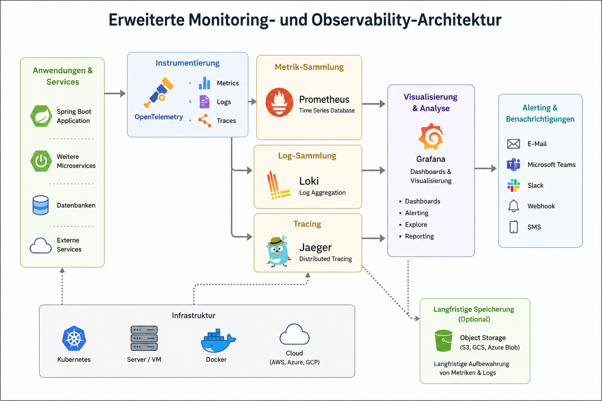
Grundlagen von Monitoring
Überwachung von Anwendungen und Infrastruktur.
Analyse von Verfügbarkeit, Performance und Fehlern.
Visualisierung technischer Daten in Dashboards.
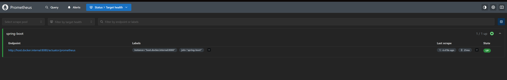
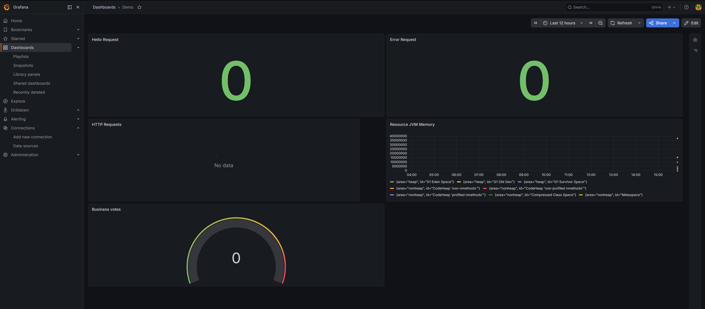
Monitoring, Logging, Tracing und Alerting
Monitoring: Sammeln technischer Metriken.
Logging: Speicherung von Ereignissen und Fehlern.
Tracing: Verfolgung von Requests über mehrere Services.
Alerting: Automatische Warnungen bei Problemen.
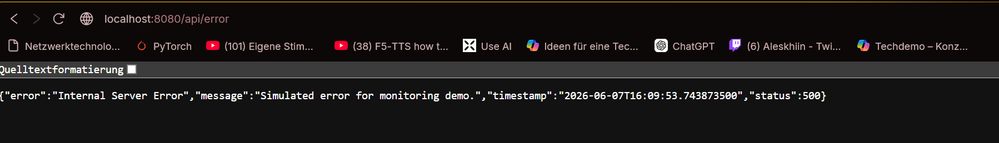
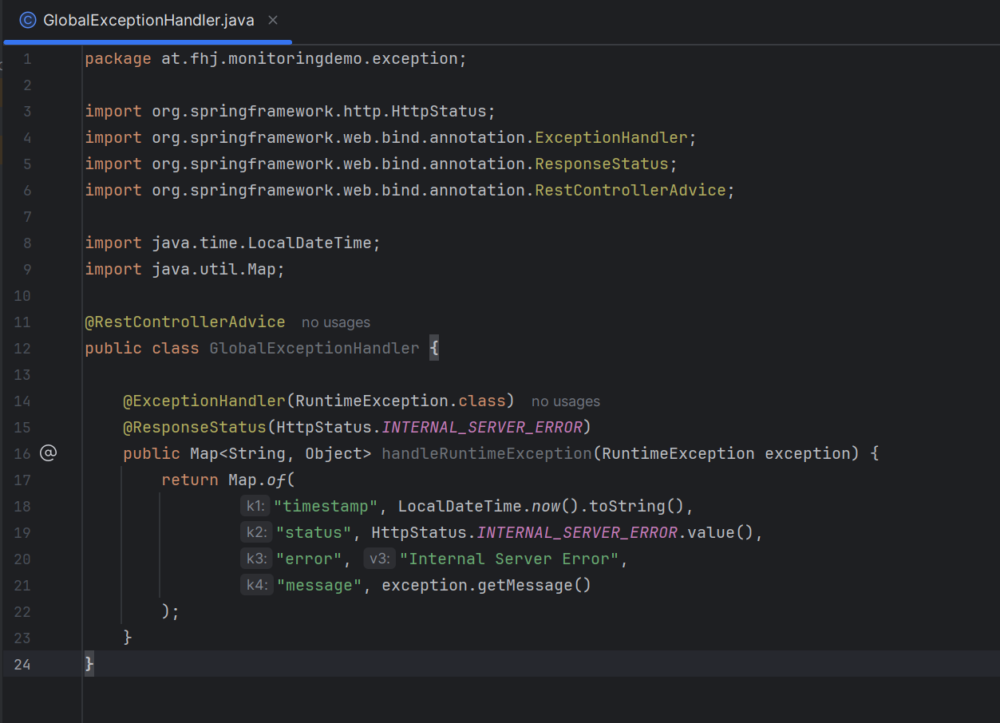
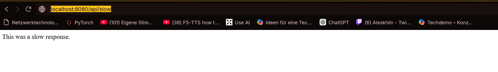
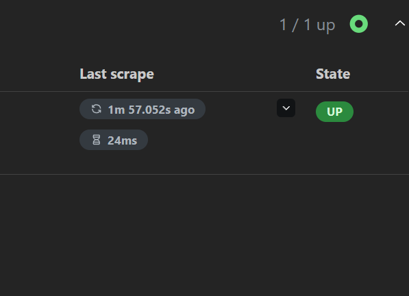
Wichtige Monitoring-Konzepte
Metrics: CPU, RAM, Requests, Antwortzeiten.
Health Checks: /health, /live, /ready.
Observability kombiniert Metrics, Logs und Traces.
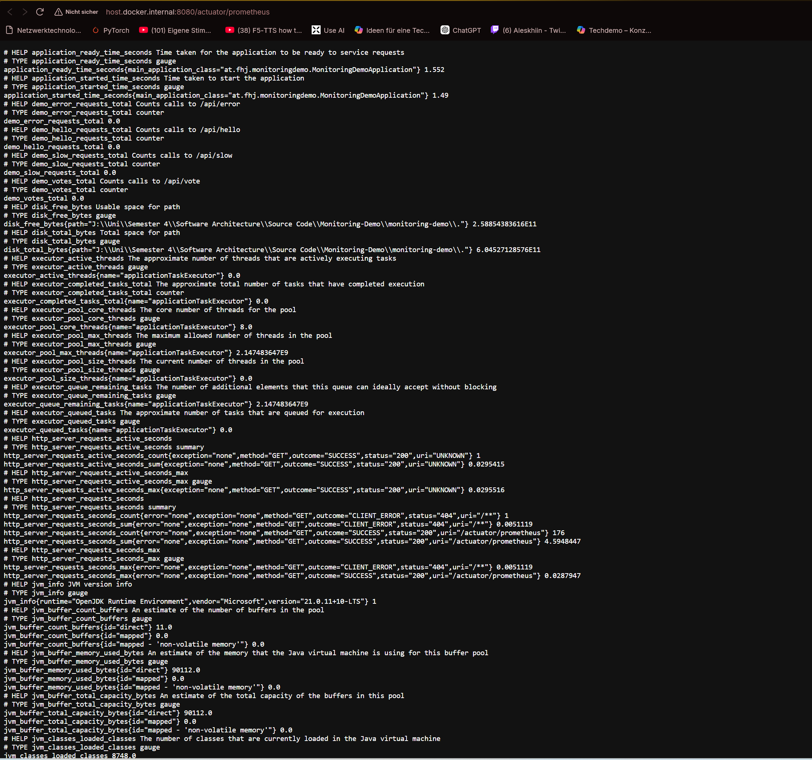
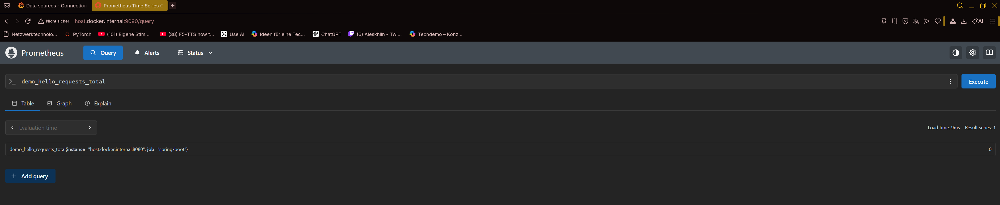
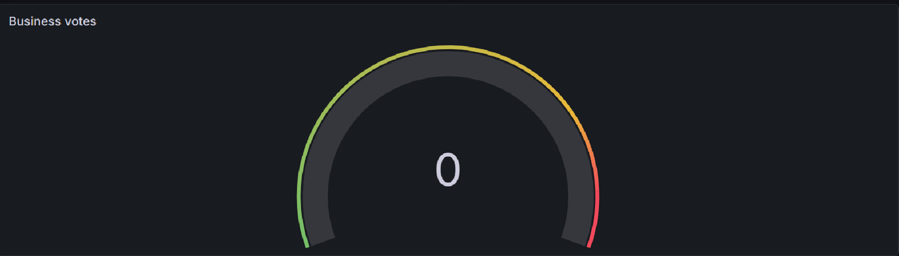
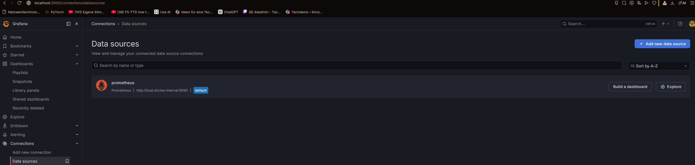
Monitoring in Software-Architekturen
Monolithen: Einfacheres Monitoring.
Microservices: Höhere Komplexität.
Cloud-native Systeme benötigen kontinuierliche Überwachung.
Verwendete Technologien
- Spring Boot
- Spring Boot Actuator
- Micrometer
- Prometheus
- Grafana
- Docker Compose
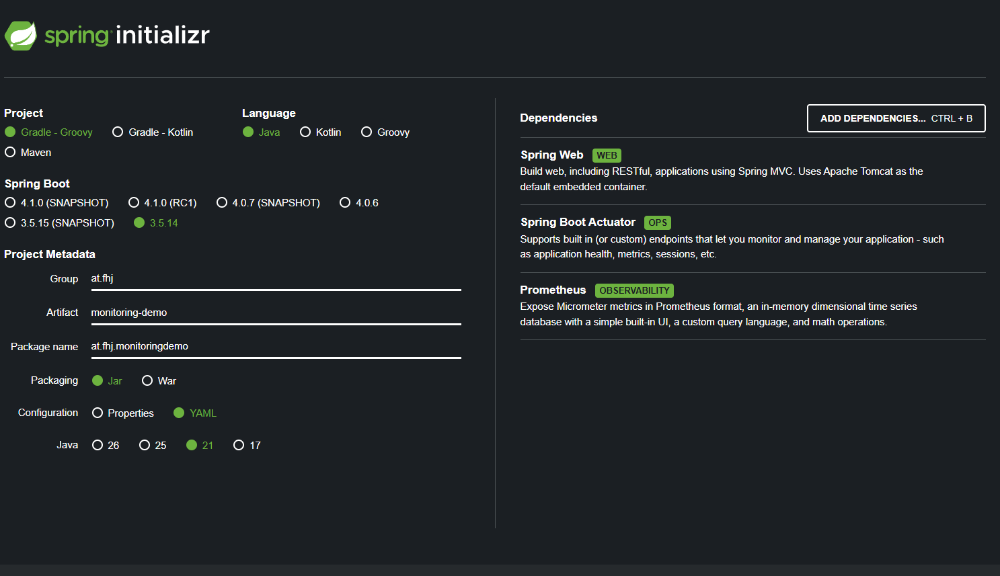
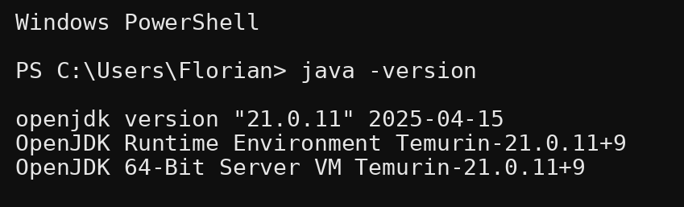
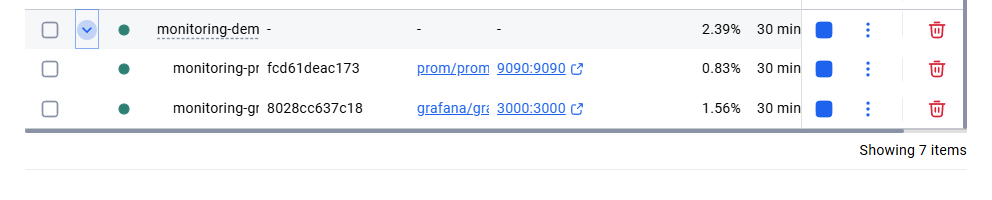
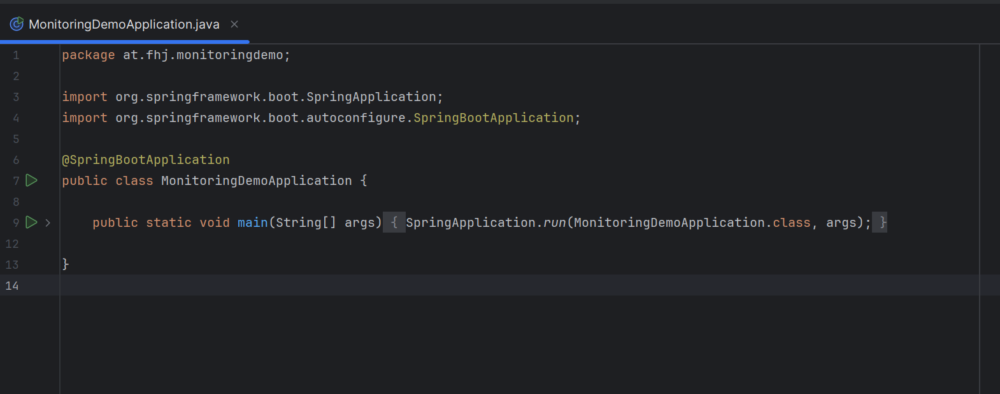
Architekturübersicht
Die Spring-Boot-Anwendung stellt Monitoring-Metriken bereit.
Prometheus sammelt die Daten regelmäßig ein.
Grafana visualisiert die Daten in Dashboards.
Demo-Ablauf
- Spring Boot Anwendung starten
- Prometheus liest /actuator/prometheus
- Grafana Dashboard anzeigen
- Requests über /api/hello erzeugen
- Fehler über /api/error simulieren
- Monitoring-Daten live beobachten
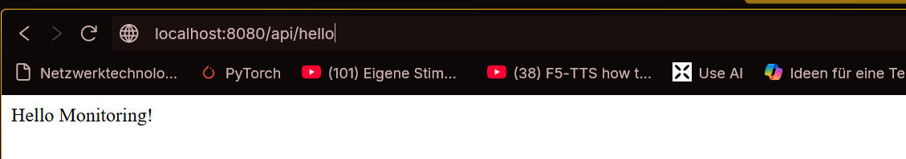
Fazit
Monitoring ist ein zentraler Bestandteil moderner Software-Architekturen.
Probleme können früh erkannt und analysiert werden.
Spring Boot, Prometheus und Grafana bilden eine leistungsfähige Monitoring-Lösung.